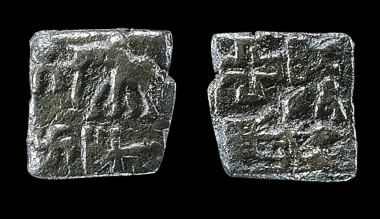

Bronze coinThis is a bronze cast coin from about the third century B.C. The symbols on the front and back of this coin were commonly used on coinage made for the Mauryan Empire. Among these important symbols are an elephant, a sun and moon, a swastika and a sacred tree. |